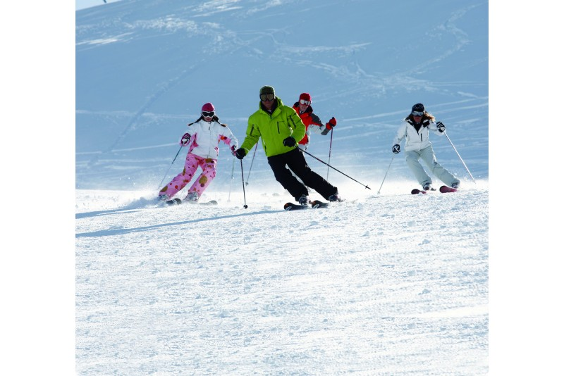
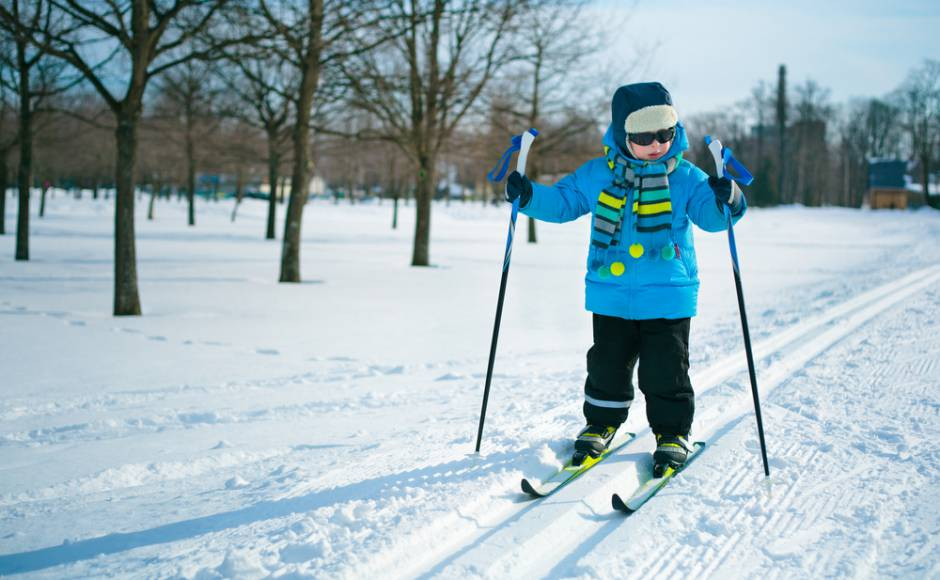
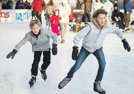
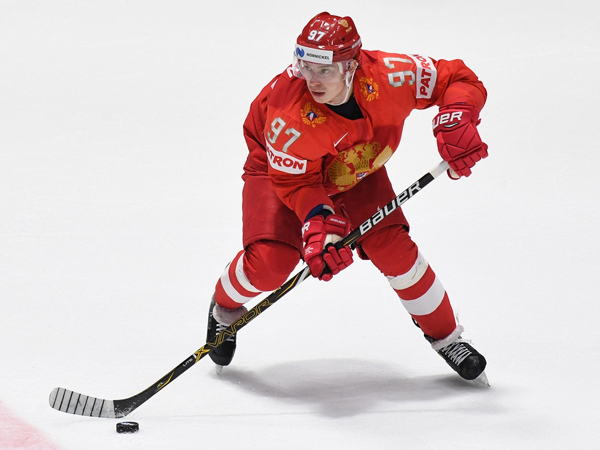
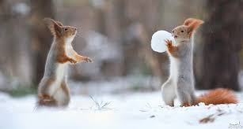

Ziemā var slēpot dažādi. Piemēram man vairāk patīk klasika, taču mani vecāki biežāk slēpo no kalna lejā.
Pēc viņu domām, labāka vieta kur to var izdarīt ir Žagarkalns.
Žagarkalna slēpošanas bāze ir viena no lielākajām slēpošanas bāzēm Latvijā ar dažādu reljefu un augstumu trasēm.
Tas ir piemērotas gan iesācējiem, gan slēpotājiem ar priekšzināšanām.
 
Slēpošanas attēliAtšķiribā no slēpošanas, šai aktivitātei ir vajdzīgs auksts laiks un ezers. Bet šajā sportā arī ir daudz sacencību.
Var minēt gan hokeju, gan daiļslidošanu, gan ātrslidošanu.
 Masveida pikošanās ir viena no jautrākajām nodarbēm, ko var darīt ziemā.
Tas interesē gan bērnus, gan pieagušus cilvēkus.
Tikai iedomājaties, apkārt viss ir balts, jūs ar saviem draugiem pastaigajaties un viena brīdī kāds saka mest sniega pikas.
